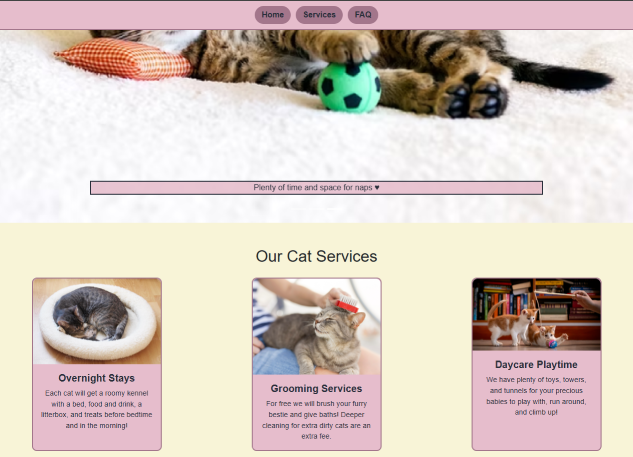
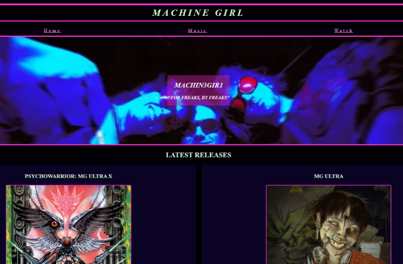
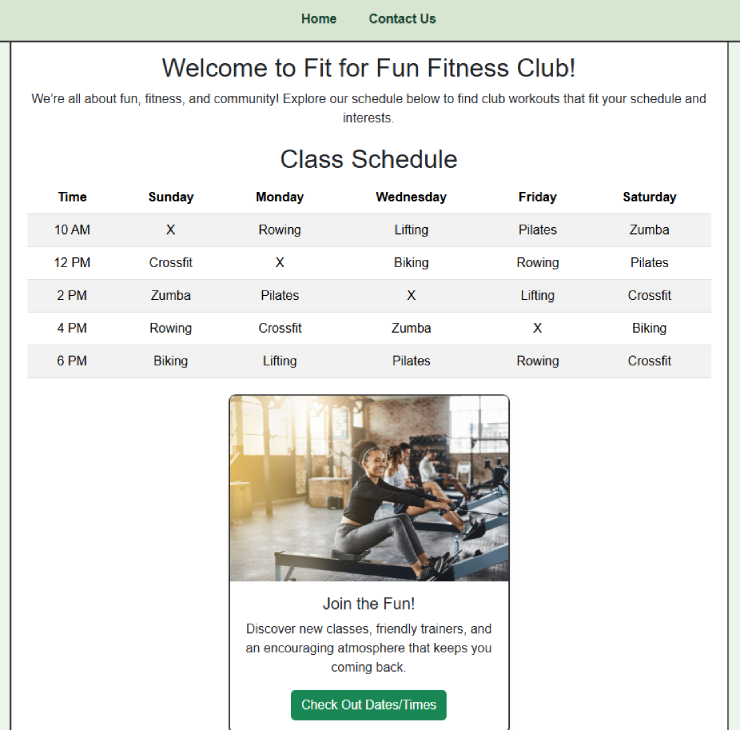
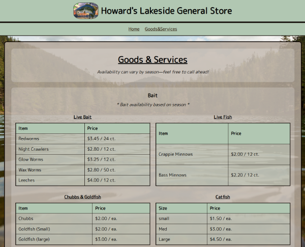
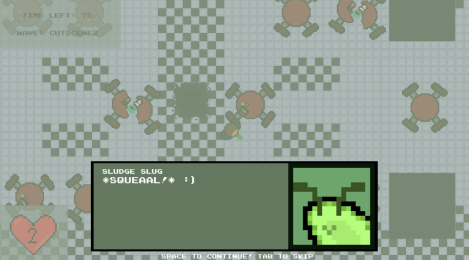

Previous Coding Projects
Here's a collection of the projects I've worked on that showcase my skills in HTML/CSS, and then an
extra project at the end of my video game which shows skills in many different things even past
coding. Each project helps showcase different skills that I have learned!
Pawfect Petcare

A fictional petcare business site where I used bootstrap to do a multitude of things, such as cards,
a carousel with slides, a grid system, and an accordion system.
Visit Project
Machine Girl Site

A fan site made for a band to teach myself how to stylize a site to look stylistically good while
including things like youtube videos, heroes, media inquiries, and flexboxes with columns
Visit Project
Fit For Fun Fitness Club

A site for a fictional gym fitness club that utilizes a bootstrap table, bootstrap utility classes,
flexboxes, a mobile first layout, and a card including a button.
Visit Project
Bait Shop - Howard's Lakeside General Store

A site made to practice making a site for a real business, where I took a local business's website
and included tables, WCAG accessibility with things like correct color contrast and alt text, and
all the info needed for such a business.
Visit Project
Radia-Ton Video Game

A video game of mine that I took to 2nd at state in SkillsUSA where I coded dozens of mechanics,
including movement, health, random spawning encounters, bosses, cutscenes, and a lot more. Spent
aproximately 4 months on this.
Visit Game Site